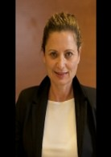
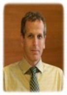
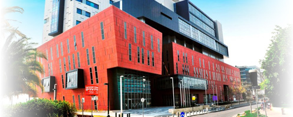

|
Pезультаты поиска
Результаты поиска:
"Диагностика"
Остеохондроз чаще всего поражает суставные хрящи позвоночника, в процессе заболевания происходит постепенное разрушение хрящевой ткани, что может привести впоследствии к деформации межпозвоночных дисков. Лечение остеохондроза в Израиле п... Страницы: |
Рак груди считается одним из самых распространенных онкологических заболеваний. По статистике, злокачественная опухоль молочной железы поражает каждую восьмую женщину в Израиле. Лечение рака груди проходит тем успешнее, чем раньше выявле... Страницы: |
Кардиологические клиники Израиля оснащены по последнему слову медицинской науки и технологии. В отделении кардиологии ведущей частной израильской больницы "Ассута" па...
Страницы: |
Одним из эффективных методов лечения ожирения в Израиле является бариатрическая хирургия. В наши дни в развитых странах ожирение превратилось в самую настоящую эпидемию. Помимо негативного эстетического воздействия, избыточная масса тела с...
Страницы: |
Лечение бесплодия в Израиле начинается с выяснения причин, по которым у женщины детородного возраста не наступает беременность. Пара считается бесплодной, если в течение года супруги не предохраняются и не могут при этом зачать ребенка. В ...
Страницы: |
Миома матки является одним из самых распространенных женских заболеваний и наряду с фибромой матки встречается почти у 30% женщин. И хотя лишь незначительная их часть может превратиться в злокачественное новообразование, необходимо прово... Страницы: |
Хирургические операции в медицинских центрах больницы «Ассута» осуществляются лучшими специалистами Израиля при помощи современных технологий:
Современные операции на сердце, включая минимально инваз... Страницы: |
Панкреатит возникает при остром или хроническом воспалении поджелудочной железы, которое, в свою, очередь, может быть обусловлено целым рядом причин. Лечение панкреатита в Израиле проводится с применением инновационных методи...
Страницы: |
Симптомы (которые могут указывать и на другие заболевания) рака головы и шеи, включают в себя охриплость, изменение голоса, боли в горле, незаживающая ранка во рту или на языке, нарушенное или болезненное глотание и боль в ушах.
П...
Страницы: |
Биопсия - диагностическая процедура, при которой берется образец опухолевой тк... Страницы: |
Счастье материнства и отцовства во многом зависит от того, как протекает беременность. В Израиле существует хорошо отработанная система ведения беременности, лечения патологий, подготовки к родам и самих родов. Не случайно ... Страницы: |
Лечение почек в Израиле проводится с применением передовых методов удаления камней в почках и мочевыводящих путях. Ведущая израильская частная клиника «Ассута» располагает специализированным нефрологическим центром, где проводятся процедур...
Страницы: |
Термином «нефрология» обозначают широкую область медицинской науки и практики, охватывающую целый ряд заболеваний почек и сопутствующих патологических состояний.
Нефрология в Израиле фокусируется на лечении таких заболев...
Страницы: |
В центральном отделении ведущей израильской частной больницы "Ассута" действует экспертная ортопедическая группа, куда входят лучшие израильские специалисты в данной области.
|
Одним из самых распространенных оно заболеваний в развитых странах является рак толстой кишки. В Израиле регистрируется более трех тысяч случаев заболевания раком толстой кишки в год. В печальном списке стран, где это заболевание распрос... Страницы: |
Опухоли простаты — это то, чего опасаются многие мужчины, особенно старшего возраста. Поскольку любая опухоль гораздо проще лечится на ранних стадиях, важнейшее место в лечении рака предстательной железы занимает ранняя диагностика... Страницы: |
Центр по лечению онкологических больных состоит из диагностического и терапевтического отделений. Диагностика и консультации осуществляются лучшими специалистами-онкологами и онкологическими хирургами, которые использую...
Страницы: |
В лечении паращитовидной железы возникает необходимость, когда наблюдается ее излишне активная деятельность, ведущая к избыточной секреции гормонов, что в свою очередь приводит нарушению уровня кальция в организме.
Это прои...
Страницы: |
В онкологической практике редко наблюдаются случаи рака желчного пузыря. В Израиле это заболевание лечится хирургическим путем. Основная проблема, связанная со злокачественным образованием в области желчного пузыря, заключается в выявлен... Страницы: |
Одной из причин, по которой в течение длительного времени у женщины не наступает беременность, является мужское бесплодие. В случае, если женщина здорова и при этом не может забеременеть, следует искать причину бесплодия у ее партнера и ... Страницы: |
В Центре отоларингологии и хирургии головы и шеи проводятся открытые и эндоскопические операции на щитовидной, паращитовидных и слюнных железах, шейные диссекции, удаление опухолей языка и глотки, полная или частичная резекция горла, удаление оп... Страницы: |
Рак желудка является одним из распространенных видов онкологического заболевания, преимущественно поражает мужчин в возрасте старше 45 лет. Лечение рака желудка в Израиле проходит с применением современной диагностической аппаратуры, инн... Страницы: |
Такому тяжелому заболеванию, как рак, подвержены не только взрослые, но и дети, хотя встречается рак у детей намного реже, примерно один случай на несколько тысяч. Но ни в коем случае нельзя относиться слишком легко к вероятности заболев... Страницы: |
Катаракта - помутнение кристаллика глаза -- представляет собой одну из главных причин ухудшения зрения в развитых странах, в том числе и в Израиле, а в странах третьего мира главной причиной слепоты.
Лечение и диагностика к...
Страницы: |
В Центре отоларингологии и хирургии головы и шеи проводятся открытые и эндоскопические операции на щитовидной, паращитовидных и слюнных железах, шейные диссекции, удаление опухолей языка и глотки, полная или частичная резекция горла, удаление оп... Страницы: |
Экспертная группа Gastro Surgery Group действует под крышей ведущей израильской частной больницы «Ассута». В сферу ее деятельности входит диагностика и лечение заболеваний желудочно-кишечного тракта. Речь идет о широком спектре медицинск... Страницы: |
Успешное лечение рака мочевого пузыря в Израиле зависит от ряда факторов. Одним из них является своевременная диагностика заболевания. Известно, что при раннем выявлении целого ряда онкологических заболеваний и рака мочевог... Страницы: |
|  | Профессор Михаль Лунц – оториноларингология.
Окончила с отличием медицинский факультет Тель-Авивского университета. В течение двух лет проходила специализацию в области хирургии уха и проблем слуха у детей и взрослых в ...
Страницы: |
Известно, что онкологические заболевания лучше поддаются лечению, если диагноз поставлен на ранней стадии. Не будет преувеличением сказать, что спасение жизни может быть обусловлено проведением ранней и точной диагностики рака. В Изр...
Страницы: |
Единства мнений о том, что именно следует называть гемангиомой, в настоящее время не существует. Одни специалисты считают, что речь идет о пороке развития сосудов, другие уверены, что гемангиомой следует называть доброкачеств...
Страницы: |
В лечении раковых заболеваний ключевую роль играет раннее их выявление. Чем ранее обнаружен рак – тем больше (намного больше!) шансов полностью выздороветь. При выявлении ... Страницы: |
В Израиле успешно лечатся различные виды онкологических заболеваний, в том числе и рак легких, который считается одним из агрессивных видов онкологических заболеваний. Этот вид рака в большей степени, чем остальные связан с курением (в т... Страницы: |
Лимфомой называют группу заболеваний, при которых поражается лимфоидная ткань. Их несколько видов, которые объединены в две большие группы: лимфома Ходжкина и неходжкинская лимфома. Лечение лимфомы в Израиле проводится по стандартам соврем...
Страницы: |
Рак яичников является довольно частым заболеванием у женщин после наступления менопаузы. В Израиле существуют несколько способов хирургического лечения рака яичников и благодаря правильно подобранному лечению, в большинстве случаев прогноз...
Страницы: |
Урология в Израиле представляет собой широкий спектр диагностических, терапевтических и хирургических процедур для восстановления здоровья мочеполовой системы. Сфера урологии весьма обширна. Это не только ... Страницы: |
Лечение межпозвоночной грыжи в Израиле проводится с применением новейших методик и препаратов. Патологическое состояние, получившее название межпозвоночной грыжи, вызываются смещением межпозвоночного диска, сопровождаемое в... Страницы: |
В центральном отделении крупнейшей израильской частной клиники "Ассута" действует экспертная группа "Уромедик", специализирующаяся на хирургическом лечении болезней мочеполовой системы. Возглавляет группу профессор Джек Баниэль.
Страницы: |
Химиотерапия — это медикаментозный курс, который направлен на уничтожение раковых клеток. Она может преследовать различные цели и проводиться разными препаратами:
|
Эффективная экспресс-диагностика в Ассуте. Совмещение отдыха на Святой Земле с быстрым обследованием вашего здоровья лучшими израильскими специалистами.
Современные качественные анализы, установление диагноза, все ресурсы бо...
Страницы: |
Цирроз печени относится к числу тяжелых заболеваний, вызывающих необратимые последствия, которые могут привести к нарушению функции печени вплоть до полного отказа ее деятельности. В ходе болезни здоровые ткани печени замещаются соединител...
Страницы: |
Центр по лечению онкологических больных состоит из диагностического и терапевтического отделений. Диагностика и консультации осуществляются лучшими специалистами-онкологами и онкологическими хирургами, которые используют оборудование PET-CT (сов... Страницы: |
В последние годы в Израиле произошел настоящий прорыв в лечении рака. В нашей стране с этим заболеванием успешно борются благодаря развитым современн...
Страницы: |
|  | Доктор Йонатан Лахав окончил медицинский факультет Еврейского университета в Иерусалиме, затем в течение года работал в Бостоне, США (Mass General Hospital), специализируясь в области лечения носа, горла, хирургии головы и шеи.&n...
Страницы: |
Симптомами рака языка и глотки может стать язва или опухоль в языке, боль при глотании, кровотечение, боль в ухе или опухоль в шее. В последнем случае речь идет уже о запущенной форме болезни.
Диагностика рака языка и горта...
Страницы: |
Диагностика и лечение бесплодия в Израиле. Удачные результаты экстрокорпорального оплодотворения в Ассуте.
Широкий спектр современных процедур. ЭКО в Израиле.
Страницы: |
Эндоскопическое обследование верхнего кишечного тракта. Щадящие проверки под местной анестезией в Израиле.
Гистологические анализы, диагностика, сужение тракта, удаление доброкачественных полипов в Ассуте.
Страницы: |
Новый гематологический комплекс в клинике «Ассута» в Тель-Авиве позволяет проводить всеобъемлющее лечение, включая диагностирование заболевания и постоянное наблюдение за пациентом – с целью облегчить больным борьбу с болезнью.
Страницы: |
По сравнению со взрослыми у детей рак встречается реже. Причины, которые вызывают рак, у детей несколько другие, нежели у взрослых: на первое место выходят генетические факторы. Но развивается рак у детей, как правило, намного быстрее: н... Страницы: |
Гастроэнтерология в Израиле – динамично развивающаяся сфера медицины. Большие успехи достигнуты в лечении заболеваний пищевода, в частности, язв и пищеводе Баррета; патологиях желчевыводящих путей, печени и поджелудочной железы, бо... Страницы: |
Даже тяжелая двусторонняя нейросенсорная глухота, когда слуховой аппарат бесполезен – не приговор. На помощь придут врачи «Ассуты» и кохлеарные имплантаты.
|
Центр здоровья молочной железы, действующий в больнице "Ассута", предоставляет комплексную платформу для диагностики и лечения любых заболеваний груди. Кроме того, здесь предоставляются сопровождение и врачебные консультации женщинам, у которых ... Страницы: |
Почему в Ассуте?
«Ассута» – это обьединение медицинских центров, в которых проводятся самые передовые операции, а также диагностика ... Страницы: |
В кардио-хирургическом центре ведущей израильской частной клиники «Ассута» проводятся комплексные кардиологические консультации, диагност... Страницы: |
Сеть израильских клиник «Ассута Оптик» имеет серьезную репутацию в мировой медицине. Те, кто решил сделать операции по коррекции зрения в Израиле, чаще всего выбирают именно эти клиники. Здесь в полной мере реализован принцип израи... Страницы: |
Рак толстого кишечника является одним из наиболее распространенных видов заболевания среди мужчин и женщин и находится на третьем месте по процентам смертности из всех раковых заболеваний.
&n... Страницы: |
Лечение рака простаты в Израиле сопровождается оптимистическим прогнозом, особенно в случае обнаружения на ранней стадии. Рак предстательной железы (его еще называют раком простаты) является одним из самых распространенных видов злокачес... Страницы: |
Израильская медицина достигла внушительных успехов в лечении онкологических заболеваний различных типов. Лечение саркомы в Израиле проходит с применением самы... Страницы: |
Псориаз – хроническая кожная болезнь неинфекционного генеза. Несмотря на то, что это заболевание имеет хронический характер, и добиться полной ремиссии псориаза бывает достаточно сложно, лечение псориаза в Израиле позволяет забыть ... Страницы: |
Аритмия — нарушение нормального ритма, частоты и последовательности сокращений сердца. Синхронность работы сердца обеспечивает существующая в организме электрическая система, которая ускоряет или замедляет пульс в зависимости от по... Страницы: |
Д-р Орен Фрухтер закончил медицинский факультет Еврейского университета на базе больницы «Хадасса» в 1993 году. После службы в рядах ЦАХАЛа специализировался в области внутренних болезней и пульмонологии в Медицинском центре ...
Страницы: |
Успешное лечение опухолей в Израиле зависит от стадии заболевания. Прогноз течения онкологического заболевания опирается на результаты диагностических исследований, клиническую картину и общее состояние пациента.
Чем раньше...
Страницы: |
В крупнейшей израильской частной больнице «Ассута» действует межотраслевая экспертная группа «Бигс Медик», оказывающая разнообразные медицинские услуги пациентам в различных областях. В числе услуг – консультации, диагностические исследо... Страницы: |
В престижном районе северного Тель-Авива не иссякает поток туристов. Они приезжают сюда для того, чтобы получить лече... Страницы: |
Коронарное шунтирование в Израиле - лечение атросклероза в современном медицинском центре "Ассута", советы специалистов для пациентов перед АКШ. Диагностика и лечение сердечных заболеваний.
Страницы: |
Рак двенадцатиперстной кишки считается достаточно редким заболеванием, жертвами которого становятся, в основном, люди старше пятидесяти. Основным способом лечения рака двенадцатиперстной кишки в Израиле является оперативное вмешательство... Страницы: |
В онкологических клиниках Израиля накоплен успешный опыт лечения рака печени. В Израиле при лечении этого вида рака используются самые современные методики и наукоемкие технологии.
Рак печени ... Страницы: |
Трехмерное трансректальное и перинеальное ультразвуковое исследование (3D ТРУЗИ, 3D TRUS) предназначено для точнейшей диагностики проктологических патологий, а также болезней тазовых органов и патологий промежности.
Страницы: |
Ожирение -- одна из самых распространенных проблем современного общества. Люди с избыточным весом вынуждены бороться не только с ожирением, но и с целым комплексом сопутствующих проблем.
Снижение веса способствует также леч...
Страницы: |
В онкологическом центре больницы "Ассута" работают ведущие израильские специалисты, применяющие для быстрой, эффективной и точной диагностики различных форм рака и его леч...
Страницы: |
Рак щитовидной железы успешно поддается лечению в Израиле. Это заболевание составляет немногим более одного процента от общего числа онкологических болезней.
Опухоли щитовидной железы чаще, ч... Страницы: |
Геморрой — это расширение геморроидальных вен прямой кишки. Он считается одним из самых распространенных заболеваний. Риск заболеть геморроем увеличивается с возрастом, при неправильном обмене веществ, неправильном питании, малопод... Страницы: |
Диагностика рака в Израиле осуществляется на базе самой передовой медицинской технологии. Одним из наиболее эффективных методов диагностики рака груди является маммография.
Ранняя диагностика спас...
Страницы: |
Израиль на сегодняшний день занимает одну из лидирующих позиций в вопросе лечения лейкемии. В Израиле действуют онкологические клиники, где лечение рака крови (как еще называют лейкемию) проводится по самым современным методикам с примен... Страницы: |

Онкологические клиники Израиля известны по всему миру. В нашу страну на лечение приезжают пациенты из ближнего и дальнего зарубежья: из Европы, США, России и стран СНГ. ...
Страницы: |
Лечение опухолей головного мозга в Израиле проводится в соответствии со стандартами современной западной медицины XXI века. Речь идет об использовании самой совершенной в технологическом отношении аппаратуры, инновационных методиках и до... Страницы: |
Аденома простаты, которую еще называют доброкачественной гиперплазией предстательной железы (ДГПЖ), является одним из самых распространенных заболеваний среди мужчин старше 50 лет. В тех случаях, когда желаемого эффекта не ... Страницы: |
Медицинское обследование в Израиле проводится с применением самых совершенных методов диагностики заболевания, включающих использование современного медицинского оборудования.
В некотор... Страницы: |
Исследование ПЭТ-КТ в «Ассуте» с использованием новой и уникальной технологии TIME OF FLIGHT компании «Филипс» позволяет осуществить точную диагностику заболевания. В Израиле использование аппарата ПЭТ-КТ по технологии TIME OF FLIGHT давно...
Страницы: |
Термин «неврология» включает в себя целый ряд понятий. Это и раздел медицины, изучающий строение и механизмы деятельности центральной и периферической нервной системы. В то же время неврология – медицинское направление, занимающееся диаг... Страницы: |
| |
|